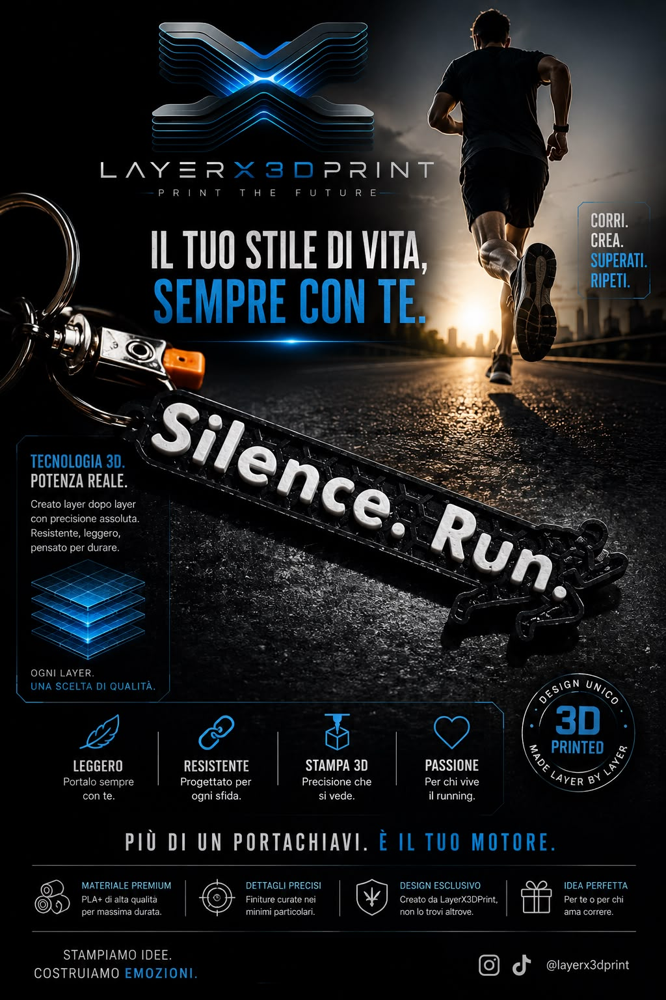
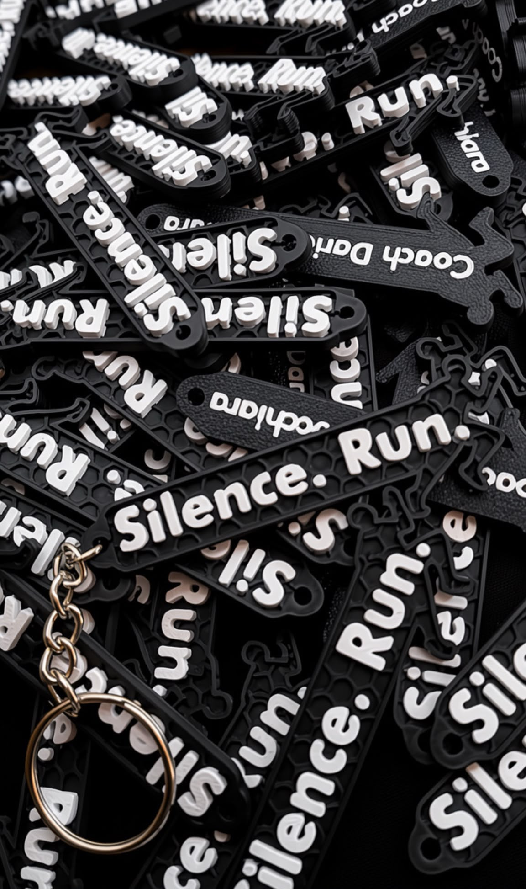
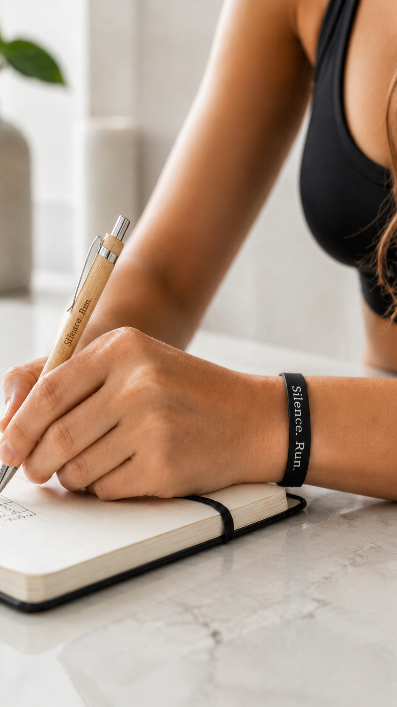
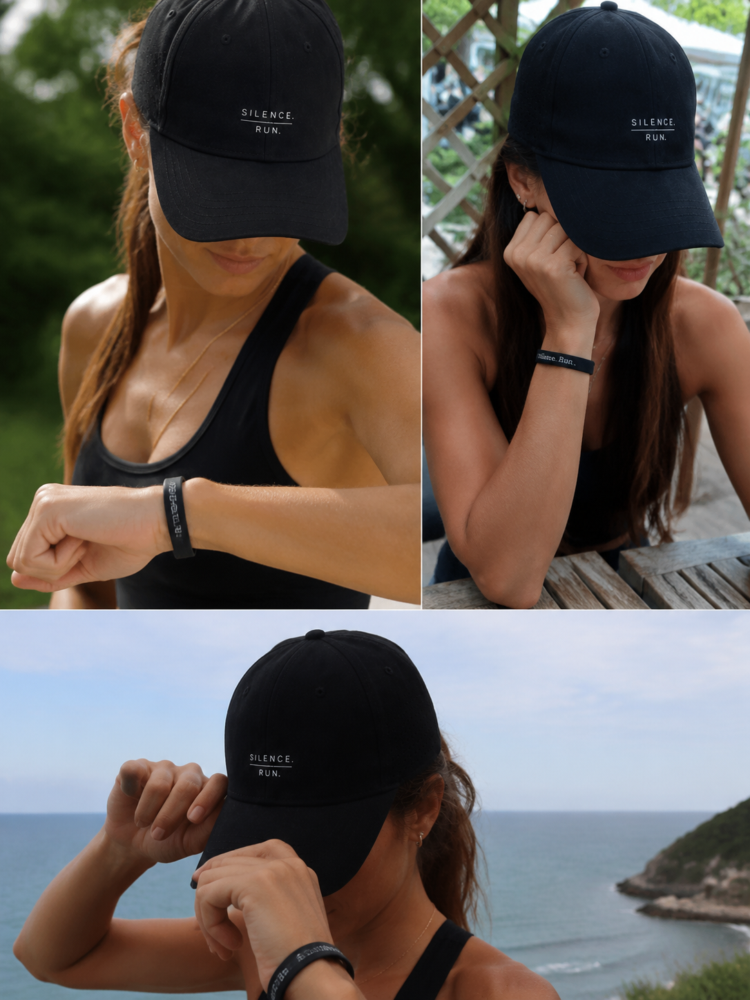

Il portachiavi Silence. Run. è pensato per accompagnare la giornata: sulle chiavi, nello zaino, nella borsa sportiva o accanto agli oggetti che usi più spesso. È un dettaglio concreto, ma racconta una scelta precisa.
Chi corre lo sa: la costanza non si vede solo nei chilometri. Si vede anche nei gesti, nelle abitudini, nel modo in cui resti fedele alla strada che hai scelto.

Il primo gadget della linea. Leggero, pratico, riconoscibile. Un piccolo simbolo da portare ogni giorno sulle chiavi, nello zaino o nella borsa sportiva.
Un braccialetto nero, sportivo e minimale, con scritta Silence. Run. Pensato per essere discreto, minimal e riconoscibile, da indossare nella vita quotidiana, prima e dopo l’allenamento.
Una penna in legno con incisione Silence. Run. Un oggetto naturale e concreto, per scrivere obiettivi, appunti, allenamenti, idee e nuove direzioni.

Altro elegante prodotto della linea è il cappellino Silence. Run.: nero, pulito, sportivo, riconoscibile. Un accessorio pensato per allenamenti, eventi, stand, giornate all’aperto e vita quotidiana.
I gadget Silence. Run. nascono per portare fuori dalla corsa ciò che la corsa insegna: disciplina, identità, semplicità e continuità. Per informazioni su portachiavi, braccialetto, penna in legno e cappellino, puoi inviare una richiesta unica da qui.